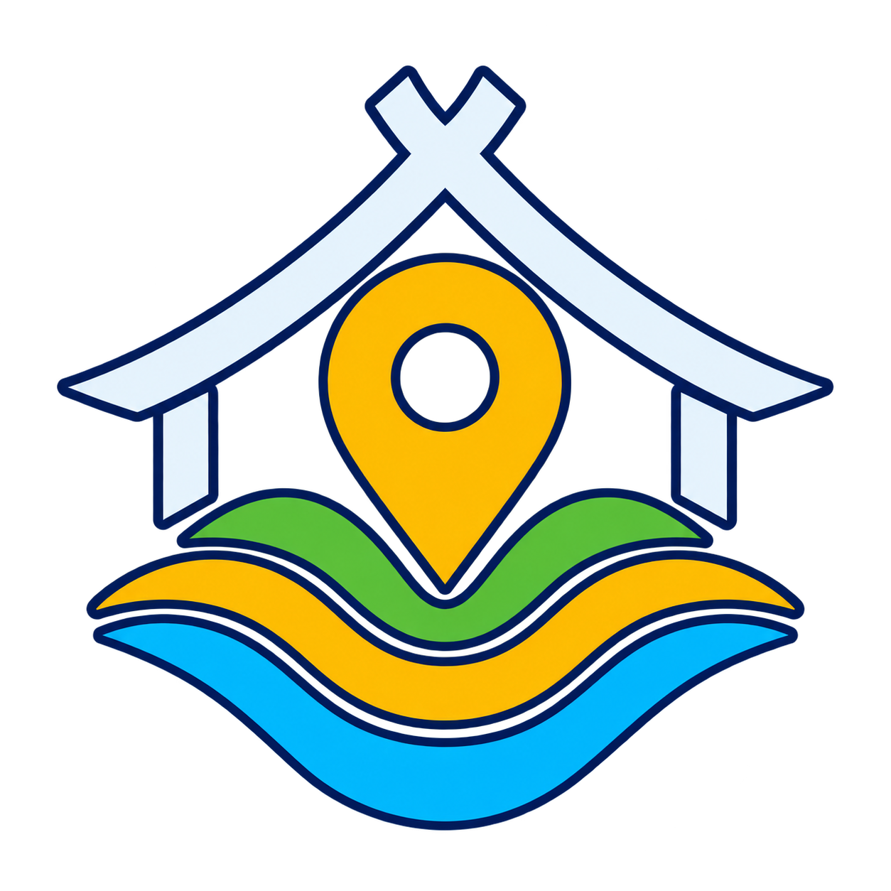

Satu Tempat, Seluruh Informasi Ruang
Kode akses dikirim hanya ke email berdomain @atrbpn.go.id dan berlaku selama 10 menit.
Aplikasi menyajikan informasi awal tata ruang dan bukan dokumen legal untuk penetapan hak, perizinan, atau batas bidang.
Ketelitian informasi mengikuti skala data resmi. Konfirmasikan keputusan formal kepada instansi yang berwenang.
Bale Ruang NTB menyajikan informasi tata ruang beserta regulasinya di Nusa Tenggara Barat. Tunjuk sebuah lokasi atau bidang, dan aplikasi menampilkan peruntukan ruangnya menurut RTRW/RDTR serta status lahannya.
Ketuk judul di bawah untuk membaca penjelasan lengkapnya.
| Latitude, Longitude | -8.5833, 116.1167 |
|---|---|
| Derajat menit detik | 8°35'00"S 116°07'00"E |
| TM-3 (meter) | X 268.800, Y 551.500 |
| Tautan Google Maps | https://maps.app.goo.gl/… |
Untuk mengetahui peruntukan ruang apa saja yang mengenai sebuah bidang, beserta luasnya. Ada tiga cara:
Menu Regulasi berisi dokumen RTRW dan RDTR yang menjadi dasar layer di aplikasi ini, dikelompokkan per kabupaten/kota.
Beberapa dokumen RDTR berukuran besar (hingga ±50 MB), jadi sebaiknya dibuka saat jaringan stabil.
| Ukur Jarak | Ketuk dua titik atau lebih untuk mengukur jarak. |
|---|---|
| Ukur Luas | Gambar bidang untuk menghitung luas dan menganalisisnya. |
| SHP ke KML | Mengubah file SHP (.zip) menjadi KML, misalnya untuk Google Earth. |
| KML ke SHP | Mengubah file KML menjadi SHP (.zip). |
| PDF KKPR ke Poligon | Membaca koordinat dari PDF KKPR menjadi bidang di peta. |
| Foto & PDF Geotag | Memotret di lapangan dengan kamera; koordinat GPS dan lokasinya disimpan dalam PDF. |
| Pasang Aplikasi | Memasang Bale Ruang NTB di perangkat (muncul jika perangkat mendukung). |
Tombol di pojok peta: lokasi saya, seluruh NTB, dan zoom ke titik/bidang aktif.
Laporan berisi peta, tabel hasil analisis, keterangan kawasan, dasar hukum, dan legenda.
Bale dalam bahasa Sasak bermakna rumah atau tempat bersama. Bale Ruang NTB adalah rumah informasi tata ruang Nusa Tenggara Barat: satu aplikasi peta untuk melihat informasi tata ruang beserta regulasinya di lokasi mana pun di NTB, dari HP maupun komputer.
Informasi yang ditampilkan bersifat awal dan tidak menggantikan dokumen resmi. Untuk keputusan resmi, konfirmasikan kepada instansi yang berwenang.
—
Menyiapkan pemeriksaan seluruh layer…
Menyiapkan export…
Satu bidang langsung dianalisis. SHP berisi banyak bidang—skala desa, kecamatan, atau kabupaten—otomatis dibuka dalam mode Explor Bidang agar tetap ringan. PDF KKPR digital dibaca untuk mencari Koordinat yang Disetujui.
ZIP Shapefile harus memuat SHP, SHX, dan DBF. PDF hasil scan memerlukan OCR/AI dan belum diproses otomatis oleh pembaca lokal.
Pengolahan banyak bidang tersedia pada Bale Ruang NTB Internal.
Masuk menggunakan email instansi yang diizinkan untuk membuka Explor Bidang, rekap hak, pemeriksaan tumpang tindih, dan analisis Hak × Tata Ruang.
Periksa pasangan koordinat sebelum membentuk poligon.
Tempel koordinat atau tautan Google Maps apa adanya. Sistem mengenali format, pemisah, dan urutan koordinat secara otomatis.
Menyiapkan perhitungan…
Memeriksa irisan dengan seluruh layer…